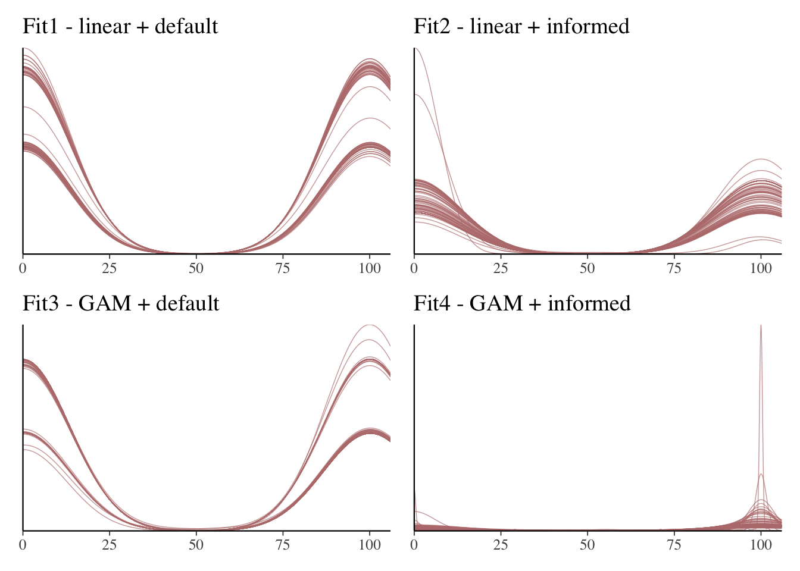
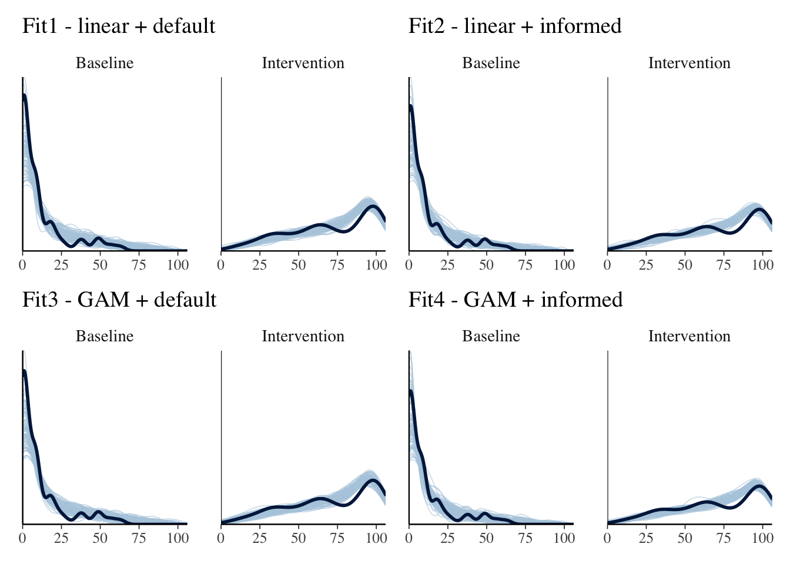

Analysis plan
Synthesis plan
We will conduct an individual participant data meta-analysis, by modelling a Bayesian, beta-binomial hierarchical regression. Our effect size will be presented as odds ratio between baseline and intervention phase, which represents the trend and variability aspects of SCED analysis according to WWC guidelines. The analyses will be performed in R (R Core Team, 2023; R version 4.3.1), using the brms (Bürkner, 2017) package, an R wrapper for the probabilistic programming language Stan (Stan Development Team, 2024). We will conduct separate analyses for each category of reading interventions, as we do not consider them conceptually homogeneous enough to aggregate in one model. Likewise, we will group the analyses based on designs that can be synthesized in the same model. In the first group, we will aggregate multiple baseline (and its variants), multiple probe designs and changing criterion designs. We consider these designs similar in logic, and as long as the intervention and outcome are kept homogeneous, we can model the variations in measurement and intervention setup across stages as random variation. In the second group, we will aggregate alternating phase designs (i.e., AB designs). The third group will consist of multiple treatments. With three groups based on design, and three interventions (phonological awareness, fluency, and phonics), we anticipate nine main meta-analytic models. We will not model interventions categorized as other as we expect that category to be overly heterogeneous.
We will model the baseline and intervention phase separately in our main meta-analysis model, with interaction with time (session). We will also not model autocorrelation. Although the literature suggests the existence of moderate autocorrelation, particularly in multiple-baseline designs (Shadish, 2011), we could model it exploratory only due to unknown estimates.
We will plot the posterior distributions of the average intervention effect (fixed effect) and the interaction effect between session and intervention, along with the posterior distributions of the random-effects estimates to assess heterogeneity in intervention effects between studies and between participants within studies. Heterogeneity will be quantified using the posterior distributions of the standard deviations (SDs) of the random effects for the intervention phase at both the between-study and between-participant levels, as well as the standard deviation of the session-by-intervention interaction effect. We will provide estimates with 90% credible intervals for each effect, allowing readers to understand both the average intervention impact and the variability of effects across different studies and participants.
Level one of the multilevel model describes the relationship between the outcome - word or non-word reading, and the predictor - reading intervention. Informed by previous reviews with similar interest, we assume majority of the studies will employ non-standardized word-reading tests, with counts and percentages as measures, and fixed word lists, as we assume the existence of autocorrelation (but will not model it explicitly) and knowledge transfer, we cannot assume the trials are independent. To allow for greater flexibility and account for over-dispersion (i.e., variance being larger than the mean), and to account for unavailable raw counts in instances where the studies present proportion of correct responses, we will model the outcome under the beta-binomial distribution (Gelman et al., 2020). Figure 1 illustrates the multiple levels in a meta-analysis.
To calculate the effect for our meta-analysis, we need to account for clusters on the levels we specified in the beginning: participant and study. There are two ways to approach when we have raw data - calculate average effects per study and do a meta-analysis of those effects (which is the common way of conducting a meta-analysis when you don’t have raw data) or build a model that directly calculates the population (average) effect from the raw data. We will do the latter, one stage approach.
Thus, our starting model is as follows:
\[ Y_{ijk} \sim BetaBin(N_{ijk}, \mu_{ijk}, \theta) \]
Beta-binomial distribution can be explained as a binomial distribution that has its probability parameter informed by the beta distribution of probabilities. \(Y_{ijk}\) represents the correct response rate for each individual (j) within a study (k) at a certain time point i = 1, …, n. \(BetaBin\) indicates the observations are drawn from a beta-binomial distribution which has the \(N_{ijk}\) parameter for the number of trials, \(\mu_{ijk}\) for the average probability (Some authors denote it as pbar; McElreath, 2020) of the beta distribution and \(\theta\) as the dispersion (precision) parameter of the beta distribution (some authors might note it as \(\phi\); Burkner, 2017).
\[ \text{logit}(\mu_{ijk}) = \alpha + \beta_1 ID_{j} + \beta_2 \text{session}_{i} + g_{jk} + g_k \]
where: - \(\alpha\) is the global intercept, - \(\beta_1\) represents the main effect of ID (i.e., intervention phase), - \(\beta_2\) represents the main effect of session (i.e., measurement occasions), - \(g_{jk}\) is the participant-level random effect nested within the study, - \(g_k\) is the study-level random effect.
Next parameters we have to specify for the Bayesian model would be the priors for the distribution parameters.We take the first function and add a prior for the average probability parameter (\(\mu\)) which is a log odds probability of success (\(\alpha_{treatment[i]}\)), with the \(treatment\) index implying whether it’s baseline or intervention. We draw the \(\alpha\) from a normal distribution with a \(mean\) of 0 and \(SD\) of 1.5. The choice of the distribution is relatively arbitrary, we can assume that the odds parameter can be drawn from a normal distribution, but parameters are up to us to define based on previous knowledge.
The multilevel model now specifies random effects on the participant (\(g_{j}\)) and study level (\(g_{k}\)). We also define parameters for priors for the means and standard deviations. As these effects are interdependent, the model also produces a correlation matrix to explain the covariance. Weakly informative priors drawn from a Student-t or a Cauchy distribution have been recommended by Gelman (2006) for hierarchical models, particularly when the number of groups is larger than 3, which we expect in our meta-analyses. Degrees of freedom were selected to allow flexibility but constrain the values, based on evidence by Brehm et al. (2021).
Furthermore, we will incorporate immediate level changes and time trends through session effects and their interaction with intervention. This allows us to capture both immediate shifts and gradual changes during intervention. The model includes random slopes for both session and intervention × session effects at both study and case levels, enabling us to detect heterogeneity in learning trajectories across studies and participants.
LKJ, the Lewandowski-Kurowicka-Joe distribution is a probability distribution over positive-definite symmetric matrices with unit diagonals, i.e., correlation matrices (Gelman, 2020). We use this distribution as a prior for the correlation matrix of effects in the model and set it as \(LKJcorr(2)\) of 2, which makes extreme correlations less likely in the correlation matrix, but still allows for correlations between the effects (McElreath, 2020).\
We draw standard deviations from the half-student-t distributions, instead of normal, as it allows the possibility of extreme (tail) values, which helps us accommodate to uncertainty of these values. By defining it as “half”, we constrain the distribution only to positive values for the SD.\
Given the way that the designs are bounding the possible answers to a small range, and often conduct interventions until 100% success rate is achieved, we can expect ceiling effects, large effects in the intervention phase and larger improvements (slope) for those with lower baseline results.
The hierarchical structure of the random effects follows:
\[ g_{jk} \sim \mathcal{N}(0, \sigma_{j[k]}) \]
\[ g_k \sim \mathcal{N}(0, \sigma_{study}) \]
where: - \(g_{jk}\) accounts for variability among cases within studies, - \(g_{k}\) accounts for variability across studies, - \(\sigma_{j[k]}\) and \(\sigma_{k}\) are the standard deviations at each level.
The variance components follow a hierarchical prior:
\[ \sigma_{study} \sim \text{Half-Student}(3, 0, 2.5) \]
\[ \sigma_{case[k]} \sim \text{Half-Student}(3, 0, 2.5) \]
\[ \mathbf{R} \sim LKJcorr(2) \]
\[ \alpha \sim \text{Student}(3, 3.9, 2.5) \]
\[ \beta_1, \beta_2, \sim \text{Student}(3, 0, 2.5) \]
\[ \theta = \Phi \]
\[ \Phi \sim gamma(1,1) \]
Moderator analysis
We will conduct a moderator analysis based on IQ, as findings by Allor et al. (2014) suggest that lower IQ is linked to lower rates of reading development. Given the way that the designs are bounding the possible answers to a small range, and often conduct interventions until 100% success rate is achieved, we can expect ceiling effects, large effects in the intervention phase and larger improvements (slope) for those with lower baseline results. \ We will introduce IQ as a continuous predictor in the main model, centered around the group mean. While grand-mean centering might be appropriate given that it is one population of participants, in this case, group-mean centering is preferable due to the likely non-random selection of intellectual disability (ID) severity within studies. Specifically, the selection of participants with a particular severity level (e.g., mild intellectual disability) may influence the intervention complexity. If IQ were centered around the grand mean, this study-level selection bias could distort estimates, making group-mean centering a more appropriate choice to account for within-study variability.
\[ logit(\mu) = \alpha_{treatment[i]}*\beta_{session[t]} + \gamma_{IQ[j]} + g_{participant[j]} + g_{study[k]} \] \[ \gamma_{IQ[j]} \sim N(\mu_{IQ[j]}, \sigma_{IQ[j]}) \]
We will include IQ as a continuous variable rather than using categorical ID severity, as a continuous measure provides more granular and informative modeling of variation. Additionally, there are potentially two types of missing values:\
Missing (completely) at random — where IQ scores are either not reported or not permitted for sharing.\ Missing not at random - where IQ scores are unavailable because participants could not be reliably tested due to the severity of their disability.
If the data is not missing at random, we will not conduct a moderator analysis. In case of an M(C)AR type missingness, we will impute the values with the mice package.
Model building workflow
We have pre-specified possible alternatives for the models, based on assumptions about the outcome data and intervention characteristics. However, as we do not have data at the moment of specifying the models, we propose a workflow to determine which model will be selected as the main model once we obtain the data.
We will graphically inspect the data to estimate the growth curve based on sessions, to determine whether time influences the outcome linearly or exponentially.
Table X presents alternate priors and functions of the predictors that we will apply to the data and test the model fit. We will select the best model for each meta-analysis as the main model and provide results of the other model alternatives as a sensitivity analysis. Suggested informative priors come from Pustejovsky et al. (2025), although the priors they specified fith the baseline phase only, while we also include the intervention phase.
Table X
Model Specifications and Priors
| Model | Session Specification | Priors | Notes |
|---|---|---|---|
| 1A | Linear (session) | Default brms priors |
Baseline model |
| 1B | Linear (session) | - Student_t(3, 0, 2.5) for IDIntervention slope - Flat() for session slope - Student_t(3, 3.9, 2.5) for intercept - LKJ(2) for correlations - Gamma(1, 1) for phi - Student_t(3, 0, 2.5) for all group-level SDs |
Weakly informative priors based on literature; flat prior on session |
| 2A | Splined (session) | Default brms priors |
Non-linear learning trajectory using splines |
| 2B | Splined (session) | - Student_t(3, 0, 2.5) for IDIntervention - Normal(0, 0.1) for spline basis coefficients (e.g., ssession_1, etc.) - Student_t(3, 3.9, 2.5) for intercept - LKJ(2) for correlations - Gamma(1, 1) for phi - Student_t(3, 0, 2.5) for group-level SDs - Student_t(3, 0, 2.5) for spline smoothness (sds) |
Informed priors; compatible with prior predictive sampling |
Initial setup of the models and priors
Data setup
# data will be cleaned here for analyses. We will filter out maintenance and generalization phases for the analysis. We will also filter data based on SCED design and run all models for each category of designs.
data <- read_csv(here("analysis", "mydata.csv")) %>%
mutate(success_rate = round(success_rate*100, digits = 0),
fail_rate = round(abs(fail_rate)*100, digits = 0)) %>%
filter(ID != "Maintenance") %>%
group_by(case, study) %>%
mutate(session = row_number()) %>%
ungroup()
#data %>% filter(ID == "intervention") %>% ggplot(aes(x = x, y = success_rate, color = case)) +
# geom_point() +
# geom_line() +
# facet_wrap(~study, ncol = len())Code for the prior and formula setup
# regular session formula
model_formula <- bf(success_rate|trials(success_rate + fail_rate) ~ session + ID + (1 + ID | study/case))
# sigmoid session formula
model_formula2 <- bf(success_rate|trials(success_rate + fail_rate) ~ s(session) + ID + (1 + ID | study/case))
## priors for default models (linear and sigmoid)
priors_model_formula <- get_prior(model_formula, data = data, family = beta_binomial()) # linear + default priors
priors_model_formula$prior[1] <- "normal(0,100)" # for prior predictive check, remove after data collection
priors_model_formula2 <- get_prior(model_formula2, data = data, family = beta_binomial()) # sigmoid + default priors
priors_model_formula2$prior[1] <- "normal(0,100)" # for prior predictive check, remove after data collection
## Specifying informative priors for linear model (1B)
priors_model_formula3 <- c(
set_prior("student_t(3, 0, 2.5)", class = "b", coef = "IDIntervention"), # Fixed effect of intervention
set_prior("normal(0,0.1)", class = "b", coef = "session"), # uninformative prior for session
set_prior("lkj(2)", class = "cor"), # Prior for correlation matrices
set_prior("student_t(3, 3.9, 2.5)", class = "Intercept"), # Intercept (baseline phase)
set_prior("gamma(1, 1)", class = "phi", lb = 0), # Phi (precision)
# Random effects priors
set_prior("student_t(3, 0, 2.5)", class = "sd", group = "study"),
set_prior("student_t(3, 0, 2.5)", class = "sd", group = "study:case"),
set_prior("student_t(3, 0, 2.5)", class = "sd", group = "study", coef = "IDIntervention"),
set_prior("student_t(3, 0, 2.5)", class = "sd", group = "study", coef = "Intercept"),
set_prior("student_t(3, 0, 2.5)", class = "sd", group = "study:case", coef = "IDIntervention"),
set_prior("student_t(3, 0, 2.5)", class = "sd", group = "study:case", coef = "Intercept")
)
## Specifying informative priors for sigmoid model (2B)
priors_model_formula4 <- c(
# Fixed effects
set_prior("student_t(3, 0, 2.5)", class = "b", coef = "IDIntervention"),
set_prior("normal(0,0.1)", class = "b", coef = "ssession_1"), # uninformative prior
set_prior("lkj(2)", class = "cor"), # Correlations
set_prior("student_t(3, 3.9, 2.5)", class = "Intercept"), # Intercept baseline
set_prior("gamma(1, 1)", class = "phi", lb = 0),
# Random effect SDs
set_prior("student_t(3, 0, 2.5)", class = "sd", group = "study"),
set_prior("student_t(3, 0, 2.5)", class = "sd", group = "study:case"),
set_prior("student_t(3, 0, 2.5)", class = "sd", group = "study", coef = "IDIntervention"),
set_prior("student_t(3, 0, 2.5)", class = "sd", group = "study", coef = "Intercept"),
set_prior("student_t(3, 0, 2.5)", class = "sd", group = "study:case", coef = "IDIntervention"),
set_prior("student_t(3, 0, 2.5)", class = "sd", group = "study:case", coef = "Intercept"),
# Prior for spline smooth term
set_prior("student_t(3, 0, 2.5)", class = "sds", coef = "s(session)")
)Code for the models
# model 1A regular session default priors
fit1 <- brm(formula = model_formula,
data = data,
family = beta_binomial(link = "logit"),
prior = priors_model_formula,
warmup = 2000, iter = 4000,
control = list(adapt_delta = 0.99), # fix divergent transitions
core = parallel::detectCores(),
init_r=0.1
)
# model 1B sigmoid session default priors
fit2 <- brm(formula = model_formula2,
data = data,
family = beta_binomial(link = "logit"),
prior = priors_model_formula2,
warmup = 2000, iter = 4000,
control = list(adapt_delta = 0.99), # fix divergent transitions
core = parallel::detectCores(),
init_r=0.1
)
# model 2A regular session informed priors
fit3 <- brm(formula = model_formula,
data = data,
family = beta_binomial(link = "logit"),
prior = priors_model_formula3,
warmup = 2000, iter = 4000,
control = list(adapt_delta = 0.99), # fix divergent transitions
core = parallel::detectCores(),
init_r=0.1
)
# model 2B sigmoid session informed priors
fit4 <- brm(formula = model_formula2,
data = data,
family = beta_binomial(link = "logit"),
prior = priors_model_formula4,
warmup = 2000, iter = 4000,
control = list(adapt_delta = 0.99), # fix divergent transitions
core = parallel::detectCores(),
init_r=0.1
)Step 1 - Prior Predictive Checks
Figure 1 shows prior predictive checks for the 4 suggested models, based on different session function and different priors. The draws are sampled from a sample dataset of single case designs with a proportion outcome, but in a different subject, for purposes of building and testing the model before collecting real data.
Prior pred check code
#
color_scheme_set("red")
## models are fit with sample_prior = "only" to fit the drawn samples without the observed data
pp_fit1 <- brm(formula = model_formula,family = beta_binomial(link = "logit"), prior = priors_model_formula,
sample_prior = "only", data = data)
# model 1B sigmoid session default priors
pp_fit2 <- brm(formula = model_formula2, family = beta_binomial(link = "logit"), prior = priors_model_formula2,
sample_prior = "only", data = data)
# model 2A regular session informed priors
pp_fit3 <- brm(formula = model_formula, family = beta_binomial(link = "logit"), prior = priors_model_formula3,
sample_prior = "only", data = data)
# model 2B sigmoid session informed priors
pp_fit4 <- brm(formula = model_formula2, family = beta_binomial(link = "logit"), prior = priors_model_formula4,
sample_prior = "only", data = data)
pp1 <- pp_check(pp_fit1, prefix = "ppd", ndraws = 100) + theme(legend.position = "none") + ggtitle("Fit1 - linear + default")
pp2 <- pp_check(pp_fit2, prefix = "ppd", ndraws = 100) + theme(legend.position = "none") + ggtitle("Fit2 - linear + informed")
pp3 <- pp_check(pp_fit3, prefix = "ppd", ndraws = 100) + theme(legend.position = "none") + ggtitle("Fit3 - GAM + default")
pp4 <- pp_check(pp_fit4, prefix = "ppd", ndraws = 100) + theme(legend.position = "none") + ggtitle("Fit4 - GAM + informed")
pred_plots <- list(pp1, pp2, pp3, pp4)
patchwork::wrap_plots(pred_plots, ncol = 2, nrow = 2)
Step 2 - Posterior Predictive Checkes
Figure 2 shows posterior predictive checks for the 4 suggested models, based on different session function and different priors, but this time done on observed data after data is collected.
Posterior pred check code
color_scheme_set("blue")
ppc1 <- pp_check(fit1, type = "dens_overlay_grouped", group = "ID", ndraws = 100) + theme(legend.position = "none") + ggtitle("Fit1 - linear + default")
ppc2 <- pp_check(fit2, type = "dens_overlay_grouped", group = "ID", ndraws = 100) + theme(legend.position = "none") + ggtitle("Fit2 - linear + informed")
ppc3 <- pp_check(fit3, type = "dens_overlay_grouped", group = "ID", ndraws = 100) + theme(legend.position = "none") + ggtitle("Fit3 - GAM + default")
ppc4 <- pp_check(fit4, type = "dens_overlay_grouped", group = "ID", ndraws = 100) + theme(legend.position = "none") + ggtitle("Fit4 - GAM + informed")
post_pred_plots <- list(ppc1, ppc2, ppc3, ppc4)
patchwork::wrap_plots(post_pred_plots, ncol = 2, nrow = 2)
Step 3 - Model Comparisons (LOO and WAIC)
We will conduct leave-one-out cross validation, and its expansion, the Watanabe-Aikake (widely applicable; WAIC) information criterion, to select the best fitted model for the meta-analysis. Based on Gelman et al. (2014), LOO and WAIC are more appropriate for partial or complete pooling models. Interpretation will be done based on the WAIC and LOO scores, with the lowest out-of-sample deviance being the criteria for selecting the best fitting model.
Model comparison code
fit1_ic <- add_criterion(fit1, criterion = "loo")
fit1_waic <- waic(fit1)
fit2_ic <- add_criterion(fit2, criterion = "loo")
fit2_waic <- waic(fit2)
fit3_ic <- add_criterion(fit3, criterion = "loo")
fit3_waic <- waic(fit3)
fit4_ic <- add_criterion(fit4, criterion = "loo")
fit4_waic <- waic(fit4)
w <- loo_compare(fit1_waic, fit2_waic, fit3_waic, fit4_waic)
print(w, simplify = F)
l <- loo_compare(fit1_ic, fit2_ic, fit3_ic, fit4_ic) # leave-one-out cross validation
print(l, simplify = F)Step 4 - Moderator Analysis
Moderator analysis code
# we will center IQ with group mean and model with random slopes
#data_iq <- data %>%
# group_by(study) %>%
# mutate(IQ = IQ - mean(IQ, na.rm = TRUE)) %>%
# ungroup()
#
#formula_iq <- bf(success_rate|trials(success_rate + fail_rate) ~ session + ID + IQ + (1 + ID | study/case))
#
#prior_iq <- get_prior(formula = formula_iq,
# data = data_iq,
# family = beta_binomial())
#
#fit_iq <- brm(formula = formula_iq,
# data = data_iq,
# family = beta_binomial(link = "logit"),
# prior = prior_iq,
# warmup = 1000, iter = 4000,
# cores = parallel::detectCores()
# )
#
#summary(fit_iq)
#posterior predictive check for baseline and intervention fit
#pp_check(fit_iq, type = "dens_overlay_grouped", group = "ID", ndraws = 100)
#plot(fit_iq)sessionInfo()